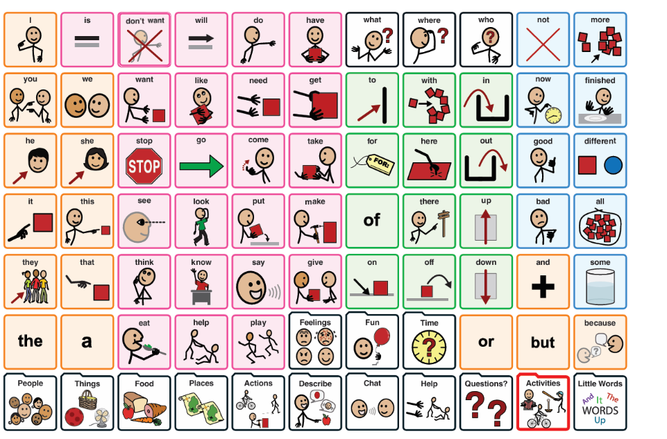

Choose a voice installed on your computer. When teaching online, include computer audio in your screen share.
This folder’s page is not included yet. Add a screenshot of this page to match its words and positions.